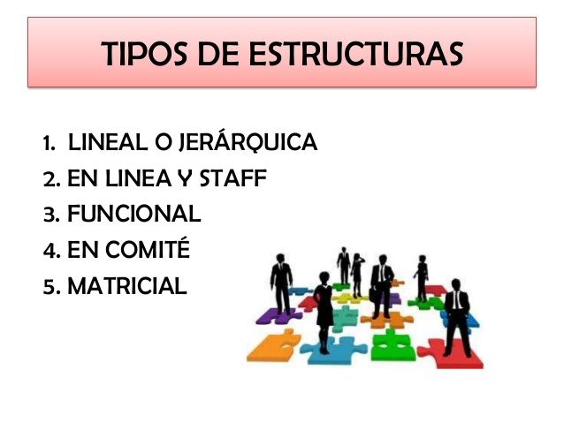

Estructura Organizacional
Se conoce como estructura organizacional a las formas de organización interna y administrativa de una empresa u organización. Esto incluye también el reparto del trabajo en áreas o departamentos determinados según esa misma estructura.
Características de la Estructura Organizacional
Toda estructura organizacional es un orden formal, es decir, consta en los documentos de la empresa y está reflejado en su organigrama. En este último se representan las distintas personas que trabajan en ella y sus cargos específicos.
Concentra las decisiones en los altos cargos de la estructura organizacional
Permite a cada departamento de la empresa importantes márgenes de autonomía
Manual de la Organización
•Es un documento técnico normativo de gestión institucional donde se describe y establece la función básica, las funciones específicas, las relaciones de autoridad, dependencia y coordinación, así cómo los requisitos de los cargos o puestos de trabajo.
Control Interno Informático
El control interno informático controla diariamente que todas las actividades de los sistemas de información que sean realizadas cumpliendo los procedimientos; estándares y normas fijados por la Dirección de la Organización y/o Dirección de Informática, así como los requerimientos legales.
Tipos de Auditorías
Descripción de los tipos de auditorías...